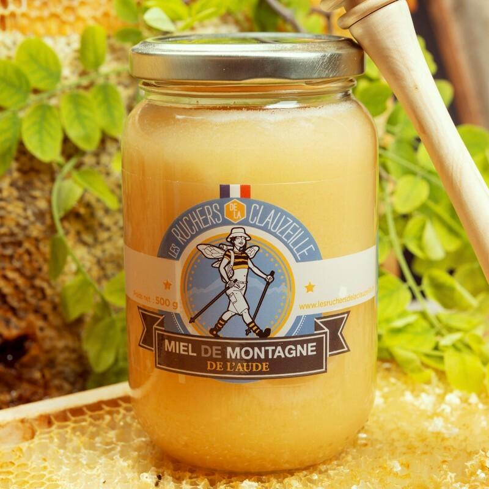
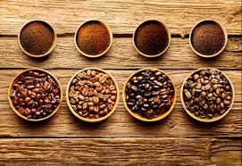
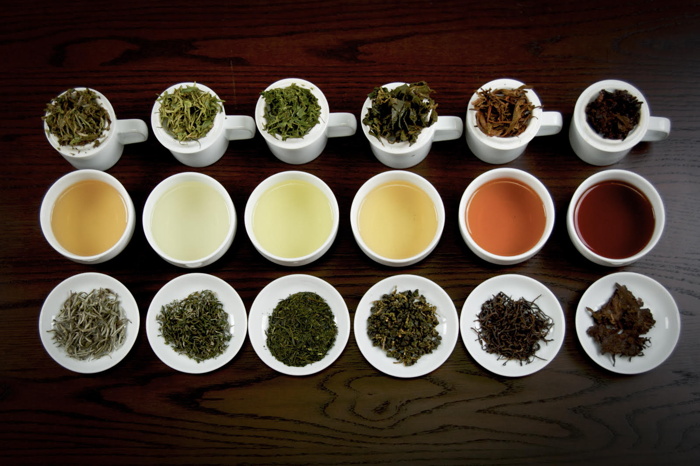
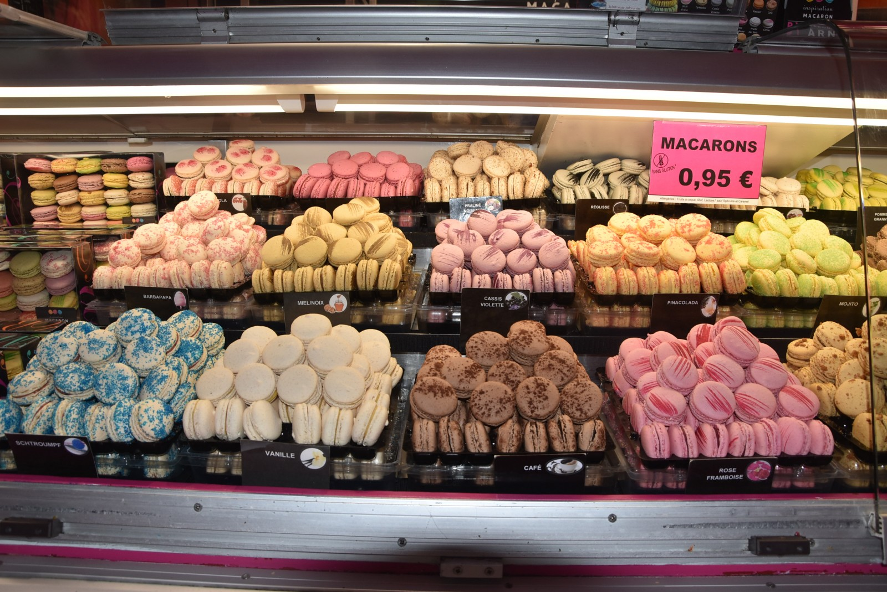

Épicerie Fine
Découvrez notre sélection artisanale de douceurs et produits d’exception soigneusement choisis pour ravir vos papilles ou offrir un moment de plaisir gourmand.
Miels français
Récoltés dans nos régions, des miels aux saveurs florales et intenses. 100% naturels, issus de producteurs locaux.

Cafés du monde
Arabica, robusta, origines rares... pour les amateurs de cafés aux arômes riches et variés, en grains ou moulus.

Thés d’exception
Voyagez avec nos thés noirs, verts et infusions issus des plus belles plantations d’Asie, d’Afrique et d’Europe.

Macarons
Gourmands et raffinés, nos macarons fondent en bouche et existent en plusieurs parfums classiques ou originaux.
